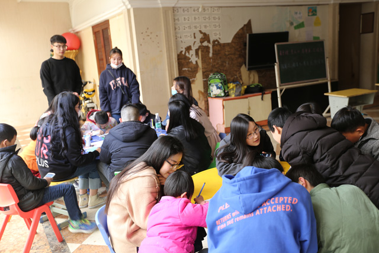

武汉工商学院志愿者让“星星的孩子”不再孤单
武汉工商学院2017-03-25
“大哥哥，这是我妈妈，她每次都叫我小武，这是爸爸，他最喜欢叫我大哥了。”3月9日15：00，在武汉“禧乐养护展能中心”，一群患有自闭症的孩子将前来看望他们的武汉工商学院大学生志愿者们团团围住，高兴地将自己的画展示给志愿者们。
这已经是武汉工商学院艺术与设计学院青年志愿者协会的志愿者们连续三年来这里，看望这些孩子们了。早在2014年，志愿者们就与武汉“禧乐养护展能中心”建立了联系，每年都会来看望孩子们，为孩子们送去零食和学习、生活用品，和孩子们一起绘画、折纸、做游戏，走进孩子们的内心。
青协志愿者们陪孩子们画画 摄影：徐莎莎
与往常一样，志愿者们刚到门口，小朋友们就围了上来，拽着哥哥姐姐的衣角不肯松手。由于很多孩子已经被领回家，和三年前相比，这里的孩子少了很多，目前只剩下了8人。据中心的负责人张老师介绍，有的孩子经过一段时间的训练，自闭的症状有所减轻，所以被家长接回家了。“这些孩子，你跟他多沟通，多陪伴，症状也会有所改善，非常感谢志愿者们经常过来献爱心”，张老师说。
“我今年大一，这已经是第8次过来这边了，之前总是团队的老成员带我们过来，现在我们接过这个爱心接力棒，继续为这些孩子带去帮助。”志愿者孙威说道。
在中心的康复教室，7个志愿者分别与8个孩子一起绘画、折纸、做游戏。一位名叫“小林”（化名）的孩子，还像模像样地画起了志愿者姐姐曾伊妮，大大的眼睛，长长的睫毛，虽然画的并不像，但是在姐姐的夸奖下，小林脸上笑开了花，别提多开心了。
志愿者曾伊妮告诉记者，“孩子们每次看到我们都很开心，他们与人沟通存在障碍，少了同龄孩子的欢声笑语，喜欢沉浸在自己的世界里，对外界很敏感。刚开始我也很害怕照顾不了他们，但时间久了，他们也渐渐依赖我了，现在看到他们的笑脸，一切都很值，我们一定会将这项志愿服务传承下去。”
据了解，患有自闭症的孩子由于生活在自我的世界里，“像星星一样孤独”，因此被称为“星星的孩子”。2007年12月联合国大会通过决议：从2008年起，将每年的4月2日定为世界自闭症日，以提高人们对自闭症患者的关注，促进针对自闭症的研究与诊断。